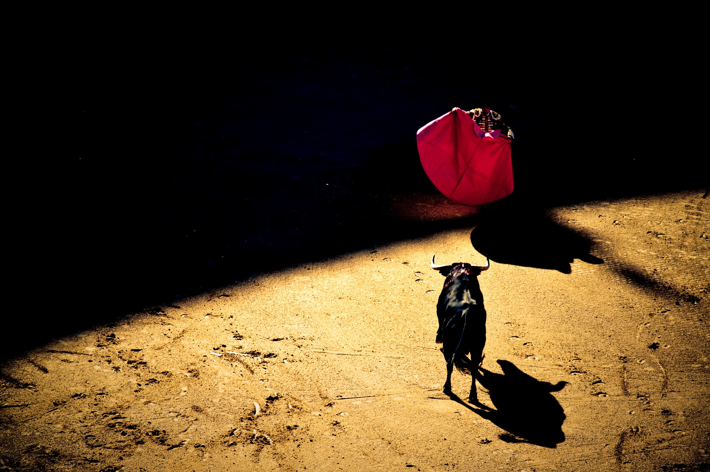

officially the Kingdom of Spain (Spanish: Reino de España),[a][b] is a country mostly located on the Iberian Peninsula in Europe. The country's mainland is bordered to the south and east by the Mediterranean Sea except for a small land boundary with Gibraltar; to the north and northeast by France, Andorra, and the Bay of Biscay; and to the west and northwest by Portugal and the Atlantic Ocean. Spanish territory includes two large archipelagoes, the Balearic Islands in the Mediterranean Sea and the Canary Islands off the African Atlantic coast, two cities, Ceuta and Melilla, on the African mainland and several small islands in the Alboran Sea near the African coast. Spain is the only European country to have a border with an African country (Morocco)
